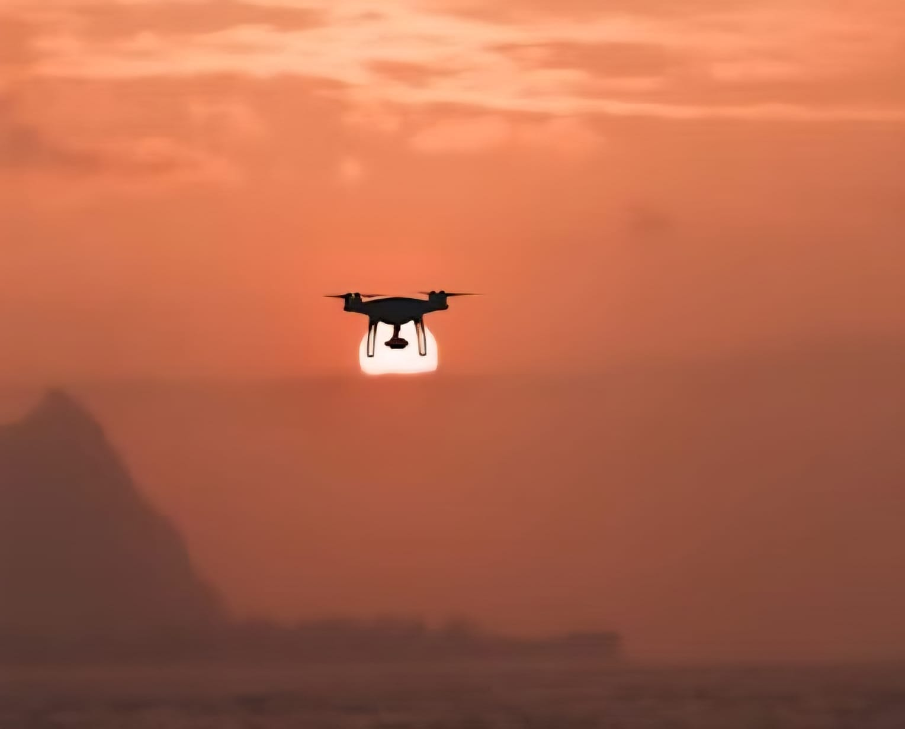

A entrega que chega
voando
Distribuição por drones para entregas rápidas, seguras e sustentáveis.
Conheça a AeroDrop →
Por que mudar?
O último quilômetro precisa de uma nova rota.
Trânsito urbano
Congestionamentos reduzem a velocidade de entrega em até 60%.
Custos operacionais
Combustível, manutenção e pessoal consomem 40% da receita.
Tempo perdido
Entregas demoram 2–4 horas em áreas urbanas densas.
Emissões locais
Veículos de combustão geram 85% das emissões urbanas.
AeroDrop usa drones para acelerar a última milha com mais eficiência, menos impacto e uma experiência superior para cidades e clientes.
Nossas soluções
Entregas expressas
Rapidez e praticidade
Entregas de pequenos produtos com agilidade e eficiência.
Logística inteligente
Tecnologia e precisão
Rotas otimizadas para melhorar o processo de distribuição.
Entrega sustentável
Menor impacto ambiental
Uma alternativa moderna para reduzir a dependência de veículos tradicionais.
Nossa frota
Drones para cada tipo de entrega.
Swift
Compacto e ágil
Capacidade máxima: até 2 kg
- Ideal para farmácias, documentos e pedidos leves.
Cargo
Robusto e potente
Capacidade máxima: até 10 kg
- Autonomia: 25 km
- Velocidade: 80 km/h
Como funciona
Do pedido ao pouso, sem complicação.
Pedido
O cliente faz o pedido pelo site ou app.
Hub
A encomenda é separada e preparada no centro de distribuição.
Voo
O drone decola e segue a rota otimizada até o destino.
Entrega
O pedido pousa no ponto combinado com segurança.